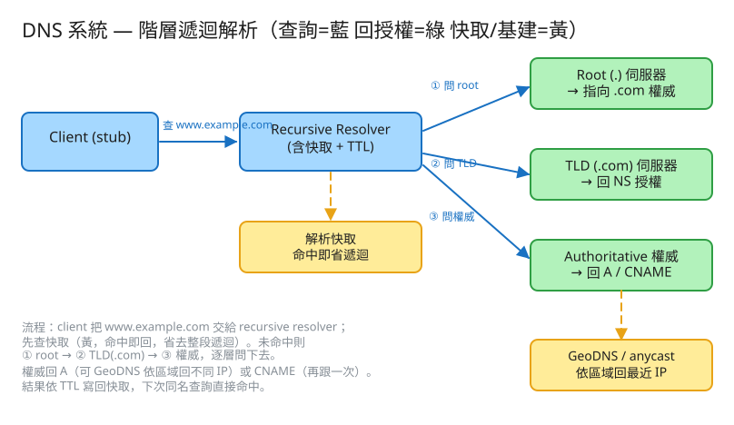

H 基礎設施 建議 40 分鐘 Design the DNS System
www.example.com）→ 回傳對應的 IP（A 記錄）。| 指標 | 假設 | 推算 |
|---|---|---|
| 查詢量（讀） | 大型 public resolver | ~1 兆查詢/日 ≈ 千萬級 QPS（峰值更高） |
| 快取命中率 | 熱門網域高度集中 | resolver 快取命中可達 80~90%+ → 真正打到權威的只剩零頭 |
| 記錄變更（寫） | 網域記錄很少改 | 讀寫比可達 百萬:1 → 寫不是瓶頸，讀才是 |
| 記錄資料量 | 每網域數筆記錄 × 數億網域 | 數十 GB 級，輕鬆放進記憶體 |
| 封包大小 | UDP/53 單包 ~512B（EDNS 更大） | 小封包、無連線 → 適合 anycast 廣布 |
# DNS 沒有「業務 REST API」，它的介面是 DNS 協定本身（UDP/TCP port 53）：
# 一次查詢 = (QNAME, QTYPE, QCLASS)
QNAME = www.example.com
QTYPE = A # 想要的記錄型別：A / AAAA / CNAME / NS / MX ...
→ 回應 = { answer: 93.184.216.34, type: A, TTL: 300 } # 帶 TTL 告訴你能快取多久
# 跟隨 CNAME：
QNAME=blog.example.com QTYPE=A
→ blog.example.com CNAME www.example.com # 別名，resolver 自己再查一次
→ www.example.com A 203.0.113.10 # 直到拿到 A 才算解析完成
# 管理面（網域擁有者改記錄，本 demo 對應 POST /api/record）：
PUT zone/example.com/records
Body: { "name":"www.example.com", "type":"A", "ttl":300, "value":"203.0.113.10" }
# GeoDNS：同名多筆，依 client 區域挑一筆回
# 權威區域檔（zone file）：某網域的所有記錄
zone example.com
example.com. A 300 93.184.216.34
www.example.com. A 60 203.0.113.10 # 短 TTL（常變/要 Geo）
blog.example.com. CNAME 300 www.example.com. # 別名 → 再跟一次
example.com. NS ... ns1.example.com. # 委派：誰是這網域的權威
# GeoDNS：同一個名字，依區域不同筆
www.example.com (region=tw) A 203.0.113.10 # 亞太節點
www.example.com (region=us) A 198.51.100.20 # 北美節點
www.example.com (region=eu) A 192.0.2.30 # 歐洲節點
# Recursive resolver 的快取（靠 TTL 自動回收）
KEY name|type|region -> { answer, expire_at } # 過期即重查
✏️ 用 Excalidraw 開啟編輯（diagram.excalidraw） Client(stub) ──查 www.example.com──▶ Recursive Resolver ──先查快取(命中即回)
│ (未命中 → 遞迴)
├──①──▶ Root (.) 回：去找 .com 權威
├──②──▶ TLD (.com) 回：example.com 的 NS
└──③──▶ Authoritative 回：A / CNAME
│
GeoDNS/anycast：依區域回最近的 IP
│
結果依 TTL 寫回快取 ◀┘ 下次同名查詢直接命中AAAA 則對 IPv6）。解析的終點。www 指到 CDN 的網域。查無此名（NXDOMAIN）也要快取一小段時間（由 SOA 的 minimum TTL 決定），避免「不存在的名字」被反覆查詢一直打穿到權威——這也是抗（誤）放大的一環。
www 指向 CDN）通常用短 TTL（30~60s）。| 階段 | 瓶頸 | 對策 |
|---|---|---|
| 單一權威 | 查詢全打權威、單點故障 | 多副本 + recursive resolver 多層快取擋掉 90%+ 查詢 |
| 熱門網域 | 少數爆紅網域查詢集中 | 高命中率快取 + anycast 把負載攤到全球節點 |
| 全球延遲 | 跨洲問權威 RTT 高 | anycast（就近節點）+ GeoDNS（就近答案）+ 邊緣快取 |
| DDoS / 放大攻擊 | 偽造來源 IP 用 DNS 做放大反射打別人 | anycast 吸收 + 限速 + Response Rate Limiting + 關閉開放遞迴 |
| 記錄變更生效 | 長 TTL 下改不動 | 對需變更的記錄用短 TTL；切換前先預先調低 TTL |
本題 demo 聚焦 DNS 的核心解析邏輯（也是面試真正考點），可實際用 PHP 內建伺服器跑起來：
src/Resolver.php 核心：階層遞迴解析（root→TLD→authoritative，回傳完整解析鏈）、解析快取含 TTL（命中省去遞迴、過期重查）、A/CNAME（CNAME 再跟一次）、GeoDNS（依 client 區域回最近 IP，分區快取），用 flock 原子更新狀態。public/index.php 路由：解析（看解析鏈 + 快取命中）/ 加記錄 / 區域切換 / 快取狀態，附深色測試頁。# 啟動
cd demo
php -S localhost:8050 -t public
# 瀏覽器開 http://localhost:8050
# 解析 www.example.com（tw）→ 看完整遞迴鏈；立刻再解析一次 → 快取命中(省遞迴)
# 區域切 us/eu 再解析 → GeoDNS 回不同 IP；解析 blog.example.com → CNAME 再跟一次